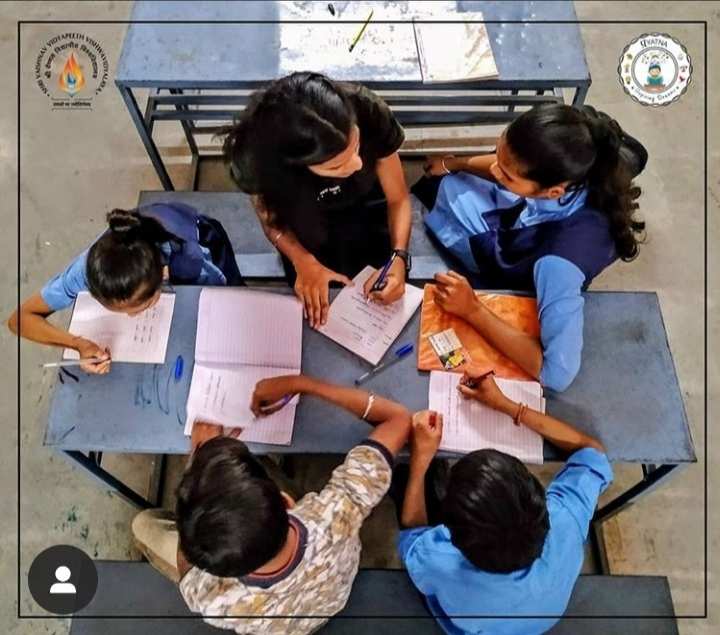

About Us
PRAYATNA is a mission carried out by the students of SVVV. The members of this committee are involved in social service for computer awareness and computer education in rural areas. The main motive is to give them the basic knowledge about computers. The members go to nearby villages and tell them about computers and its usage through clips, animation etc. they teach them some basics regarding computers, hardware parts,ms-word, flash games, paint brush, calculator etc. . Games and other sort of competitions are also conducted among rural children and are awarded as per their performance. An interactive session of question answer round is also conducted among students and the one asks or answers a question is awarded.

|
Our VisionSmith awareness and computer education in rural areas. The main motive is to give them the basic knowledge about computers. The members go to nearby villages and tell them about computers and its usage through clips, animation etc. they teach them some basics regarding computers, hardware parts,ms-word, flash games, paint brush, calculator etc. . Games and other sort of competitions are also conducted among rural children and > |
Our MissionSmith awareness and computer education in rural areas. The main motive is to give them the basic knowledge about computers. The members go to nearby villages and tell them about computers and its usage through clips, animation etc. they teach them some basics regarding computers, hardware parts,ms-word, flash games, paint brush, calculator etc. . Games and other sort of competitions are also conducted among rural children and > |
 |